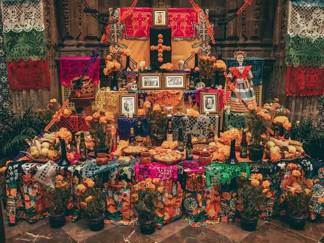
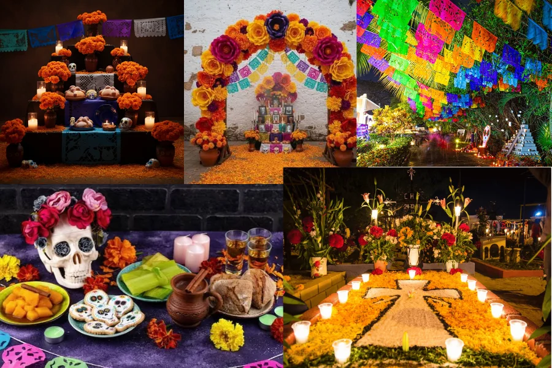
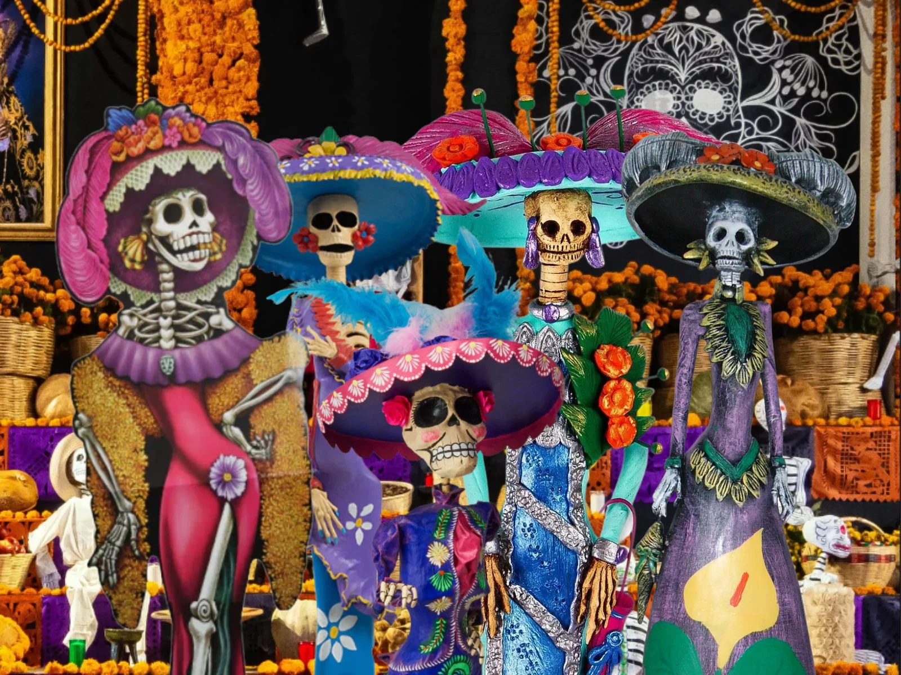

¿Qué es esta celebración?
El Día de Muertos es una de las festividades más tradicionales y significativas de México. Se celebra los días 1 y 2 de noviembre de cada año. Lejos de ser una fiesta triste, es una celebración llena de vida, color y recuerdos, donde las familias se reúnen para dar la bienvenida a las almas de sus seres queridos que regresan del más allá. En 2008, la UNESCO declaró esta festividad como Patrimonio Cultural Inmaterial de la Humanidad, reconociendo su importancia como expresión viva y tradicional.

Los elementos que no pueden faltar en el altar
El Altar: Se coloca tradicionalmente en dos niveles (que representan el cielo y la tierra) o tres (incluyendo el purgatorio)
Arco de flores: Se coloca en la parte superior y simboliza la puerta de entrada al mundo de los vivos para las almas.
Papel Picado: Representa el elemento del aire y la alegría festiva de recibir a las ánimas.
Velas y Veladoras: Su luz sirve como guía luminosa para que las almas no pierdan el camino a casa
Flor de Cempasúchil:Sus pétalos naranjas y su aroma intenso trazan el sendero que siguen los espíritus.
Agua: Se coloca para calmar la sed de las almas después de su largo recorrido desde el inframundo.

El sabor del reencuentro
El Pan de Muerto: Su forma circular representa el ciclo de la vida y la muerte. La bolita superior simboliza el cráneo, y las tiras con relieve representan los huesos y las lágrimas derramadas.
Los platillos tradicionales: Se preparan con esmero los platillos que más le gustaban al difunto en vida (como mole, tamales o pozole), ya que la creencia popular dice que las almas regresan a disfrutar y absorber la esencia de los alimentos.
La Catrina: Símbolo del folclor mexicano
La Catrina es una figura icónica que representa la muerte de manera elegante y satírica. Creada por el ilustrador José Guadalupe Posada y popularizada por Diego Rivera, la Catrina nos recuerda que la muerte es parte de la vida y que todos, sin importar nuestra posición social, compartimos el mismo destino.

Rimas con ingenio y tradiciones de México
Una parte única de la celebración son las calaveritas Literarias: versos y poemas picarescos donde se bromea con la muerte de personas vivas o famosas con mucho humor.
Además, la forma de celebrarlo cambia en cada rincón del país:
Mixquic (CDMX): Famoso por "La Alumbrada", donde miles de velas iluminan todo el panteón al caer la noche.
Pátzcuaro (Michoacán): Las procesiones en lanchas con antorchas hacia la isla de Janitzio son un espectáculo inolvidable.
Oaxaca: Se llena de color con las "comparsas", que son desfiles llenos de música, baile y disfraces.
Aprende más sobre esta tradición
El Significado del Color Naranja y el Aroma
La elección de los elementos no es casualidad. El color naranja brillante de la flor de cempasúchil representa el sol y la energía vital. Se cree que su aroma penetrante actúa como un faro invisible que guía a las ánimas directamente hacia el altar familiar, asegurando que ningún espíritu se pierda en su camino de regreso a casa.
El Vaso de Agua y el Espejo
En la ofrenda nunca puede faltar un vaso lleno de agua fresca. Este elemento sirve para mitigar la sed de las almas después del largo y cansado viaje desde el inframundo. Por otro lado, los espejos se colocan estratégicamente para que las almas puedan reflejarse y ver que ya han llegado al reencuentro con sus seres queridos.
Las Calaveritas de Azúcar y Chocolate
Las tradicionales calaveritas de dulce (hechas de azúcar, chocolate o amaranto) colocadas en los altares tienen una raíz prehispánica relacionada con el tzompantli (el altar de cráneos de la época mexica). Hoy en día, la calaverita de azúcar suele llevar el nombre del difunto (o de una persona viva con humor) escrito en la frente, recordando que la muerte es solo una etapa más del ciclo natural.
El Copal y la Purificación del Ambiente
El uso del copal y el incienso es un ritual de origen prehispánico que cumple una función purificadora. El humo aromático que desprende al quemarse sirve para limpiar el espacio de malas energías, alejar a los malos espíritus y abrir un portal sagrado que permite la libre convivencia entre los vivos y las almas visitantes.
Las Veladoras y la Luz del Camino
Las velas y veladoras representan la fe y la esperanza. En muchas comunidades se acostumbra colocar una vela por cada miembro de la familia que ya no está, y una más por el "ánima sola" que no tiene quién la recuerde. Su flama parpadeante ilumina el sendero en la oscuridad para que las almas encuentren sin problema el camino de regreso a sus hogares.